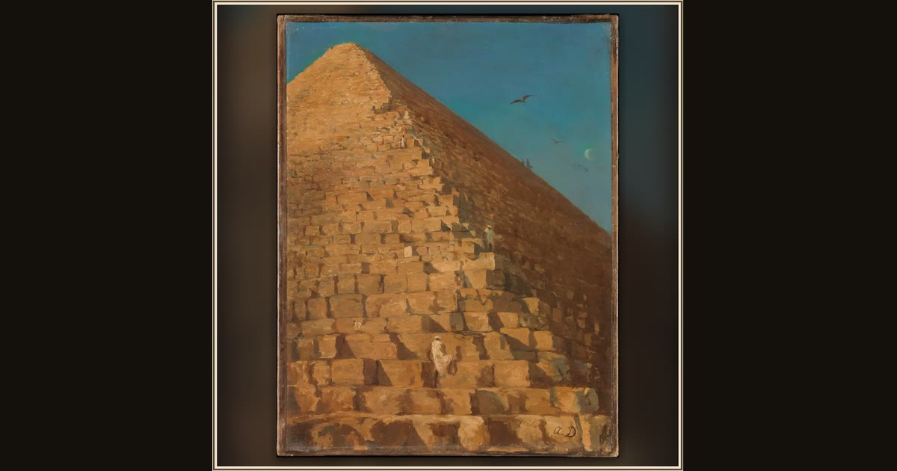

The Great Pyramid, Giza
Adrien Dauzats · 1830 or later · met
Dauzats paints the stepped flank of the Great Pyramid with small climbing figures giving the scale of its blocks, the pyramid of Kheops whose size and fitted stone Herodotus records (2.124.5) Explore its place in Herodotus's Histories, Book II, chapter 416.